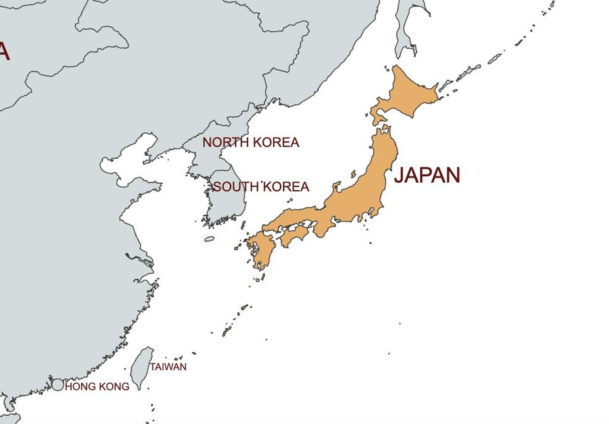
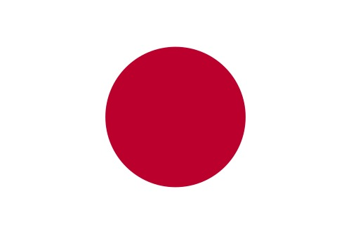
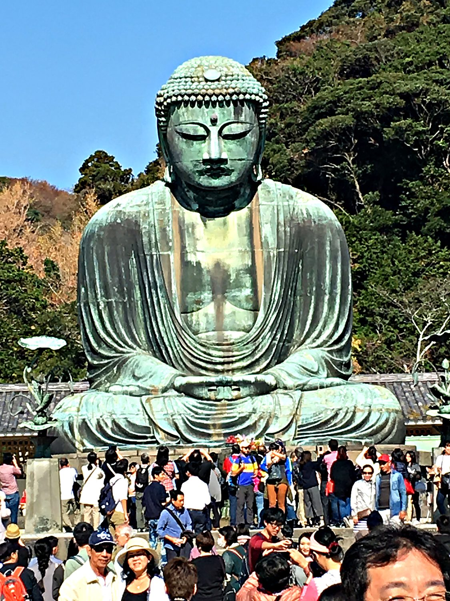
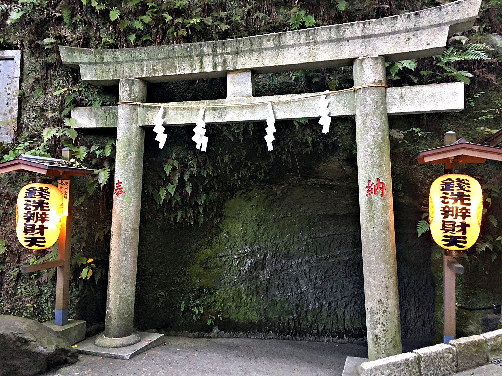
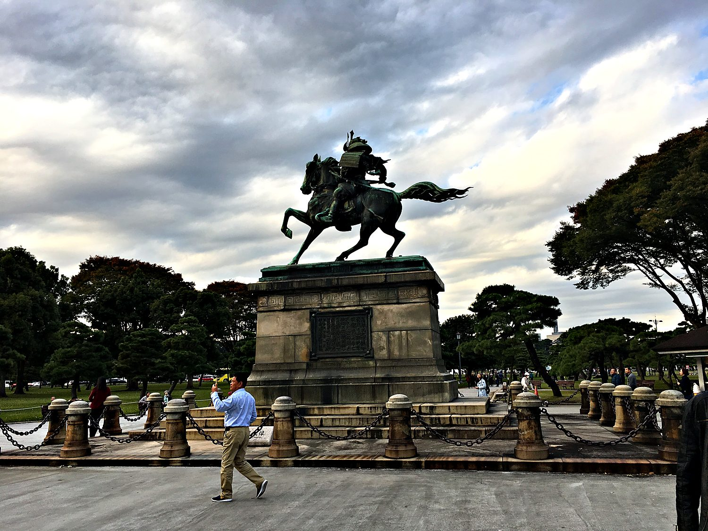

My first trip to East Asia came in October 2017, when I travelled to Tokyo with my school's French theatre troupe under the guidance of our teacher, Professor Masse. It was a cultural immersion built around the stage, and we spent our days attending Japanese-language performances, from classical Noh to a Molière comedy performed entirely in Japanese. To my surprise, I could follow the plots even without a word of the language, which taught me how much of theatre lives beyond speech. I appreciated most of the shows we watched, though the Noh play’s slowness and lack of action put me to sleep almost immediately. Between shows we wandered the neighbourhoods of Tokyo, glimpsed a flawless Mount Fuji on the horizon. I closed the trip with a solo day trip to the temples, beaches, and mountain trails of Kamakura.
Tokyo is one of the largest cities humanity has ever built, a seemingly endless carpet of streets and towers that stretches to the horizon in every direction. It was not always the capital. For centuries political power was based in Edo, the seat of the Tokugawa shoguns, the military rulers who governed Japan in near-total isolation from the outside world. When that feudal order collapsed in 1868 and the emperor was restored to power, he moved his court here and renamed the city Tokyo, meaning "eastern capital." From that moment it became the engine of Japan's astonishingly rapid transformation into a modern industrial power in what was called the Meiji Restoration.

Japan’s rapid development soon allowed it to draw even with the industrializing European countries that ruled most of the world at the time. In 1905, it beat Russia decisively in the Russo-Japanese War, the first time in a while that an Asian country held its own against a European one. Its technological and military prowess soon turned to greed, and it soon sought to develop its own colonial empire. It formally annexed Korea in 1910, and took control of Manchuria in China in 1931. This imperialism turbocharged during World War II as Japan attempted to create the “Greater East Asia Co-Prosperity Sphere,” where the entirety of Asia would supposedly benefit by giving Japan access to their natural resources. It soon conquered much of Asia, including Indonesia, Vietnam, the Philippines, and much of China. It was defeated in 1945 after the United States dropped two atom bombs on the cities Hiroshima and Nagasaki, and event that continues to scar the communal memory.

Military defeat was not enough to stop Japan’s economy. Soon after the devastation of the Second World War, it rebuilt itself into one of the world's great economies, and one closely aligned with the nation that bombed it. Although the country has stagnated in the last few decades, it remains a technological powerhouse, with a high standard of living, and diverse exports ranging from cars to anime series. Japan’s flag distills the country's very identity into a single image, a red disc on a white field representing the sun. It is a fitting emblem for the Land of the Rising Sun, whose mythology traces the imperial line back to the sun goddess Amaterasu herself.
The highlight of my day in Kamakura was its Great Buddha, a colossal bronze statue of the Amida Buddha cast in 1252 and standing over eleven metres tall. It once sat inside a great wooden hall, but the building was swept away by a tsunami in the 15th century, and the Buddha has meditated in the open air ever since, utterly unbothered. There is something profoundly calming about its half-closed eyes and gentle expression, weathered green by nearly eight centuries of sea air. It is a masterpiece of medieval Japanese craft and would be one of the most serene things I have ever stood before were it not for the gaggle of ogling tourists taking selfies at its feet.

Kamakura is more than one great statue. Once the capital of Japan's first samurai government in the 12th and 13th centuries, the town is dense with Buddhist temples and Shinto shrines tucked into its wooded hills. I spent my solo day wandering between them, passing beneath the vermilion torii gates that mark the boundary between the ordinary world and the sacred. Each gateway is a small threshold into stillness, and moving from one quiet shrine to the next, with the sound of the sea never far off, was the perfect meditative end to the trip.

Back in Tokyo, the Imperial Palace sits on the grounds of the former Edo Castle, the stronghold of the shoguns, now a green island of moats and walls in the middle of the modern city. At the edge of its outer garden stands a striking bronze statue of Kusunoki Masashige, a 14th-century samurai celebrated for his unwavering loyalty to the emperor. Rearing on his horse in full armour, he makes a fitting guardian for the seat of an imperial line that claims to be the oldest continuous monarchy on earth. It is a neat encapsulation of Japan, a warrior from the distant past keeping watch over a resolutely modern capital.
